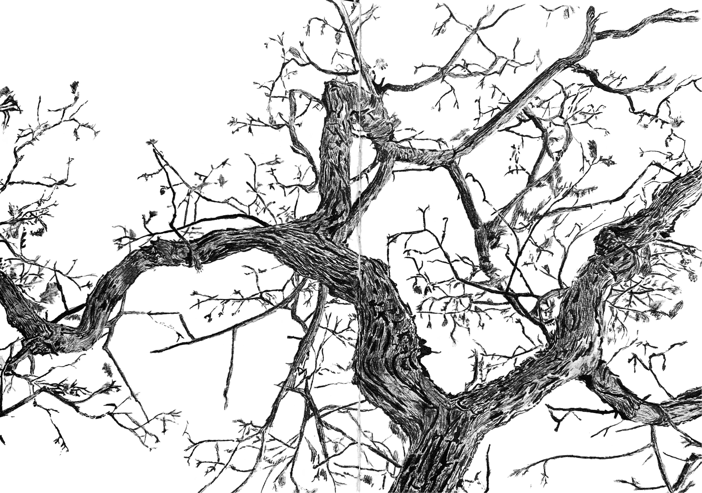

Hi I'm anArtist and this is my Art Shop.
"With every stroke of ink, I don't just draw lines—I breathe life into monochrome dreams."
Since 2020, I have been pursuing my passion for drawing, immersing myself in the timeless beauty of black-and-white art. My work primarily focuses on ink and pen art, where I explore the interplay of shadows and lines to create intricate and emotive pieces. Through this monochromatic theme, I aim to capture depth and detail, making every artwork a bold statement of simplicity and elegance.

CONNECT